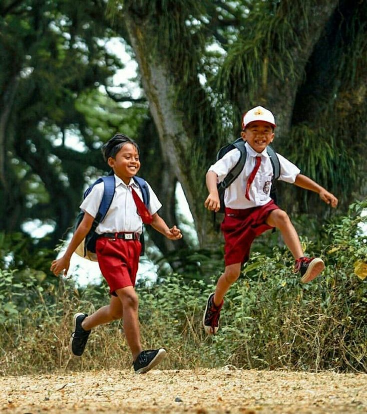

Apa itu Hari Anak Nasional?
Hari Anak Nasional diperingati setiap tanggal 23 Juli sebagai bentuk komitmen bangsa dalam memenuhi hak dan perlindungan anak. Ini bukan hanya perayaan, tapi seruan bersama agar anak-anak kita bisa tumbuh di lingkungan yang ramah dan mendukung.
Kegiatan

Permainan kelereng mengajarkan kerja sama, sportivitas, dan melatih ketelitian serta koordinasi motorik halus anak secara menyenangkan.

Permainan layangan melatih kreativitas, kesabaran, dan keterampilan motorik.

Permainan lari-larian meningkatkan kebugaran fisik, kelincahan, dan keceriaan anak.